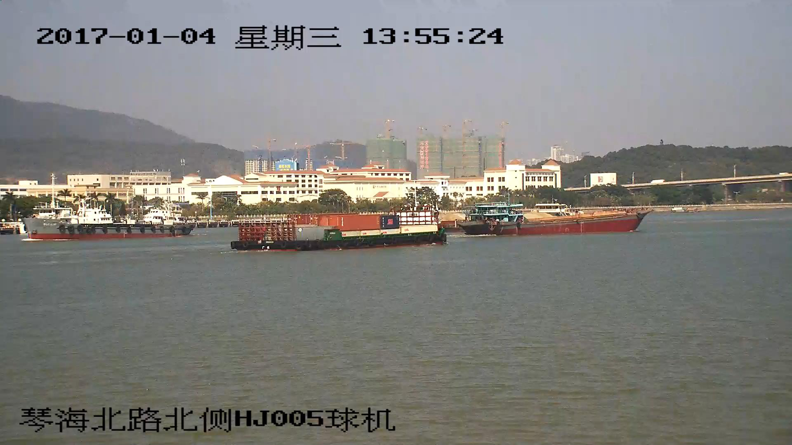
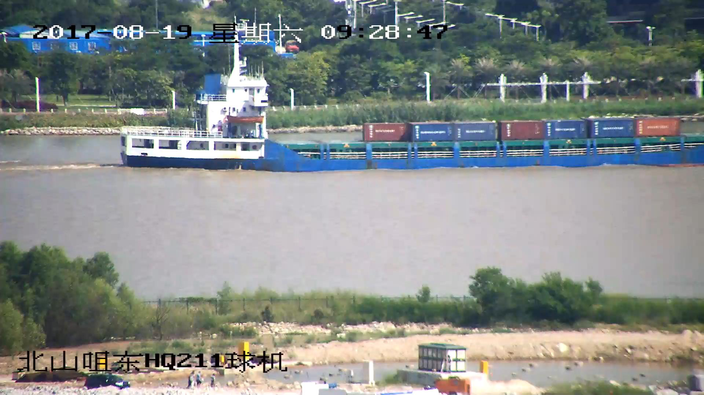
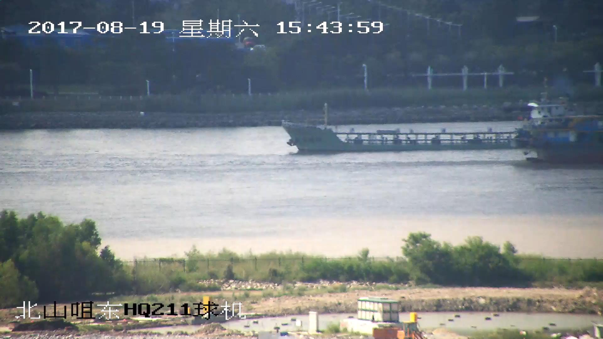
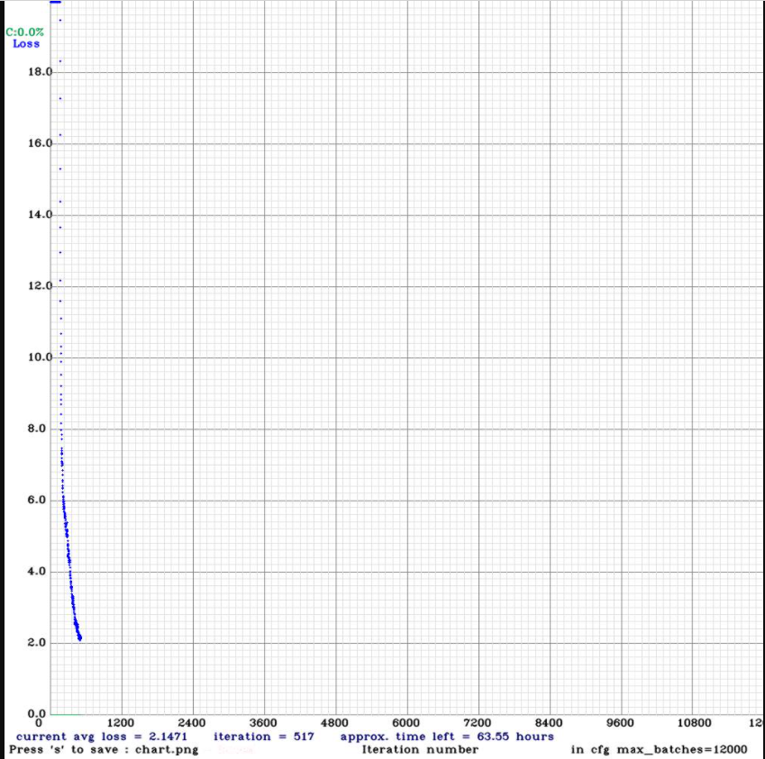
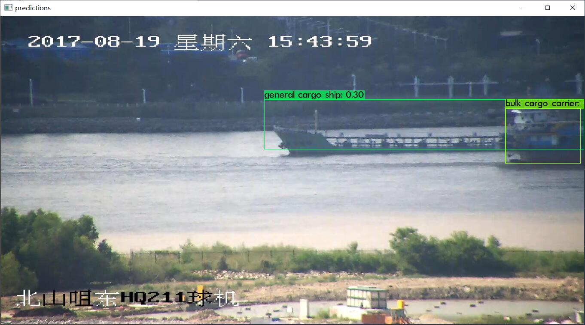
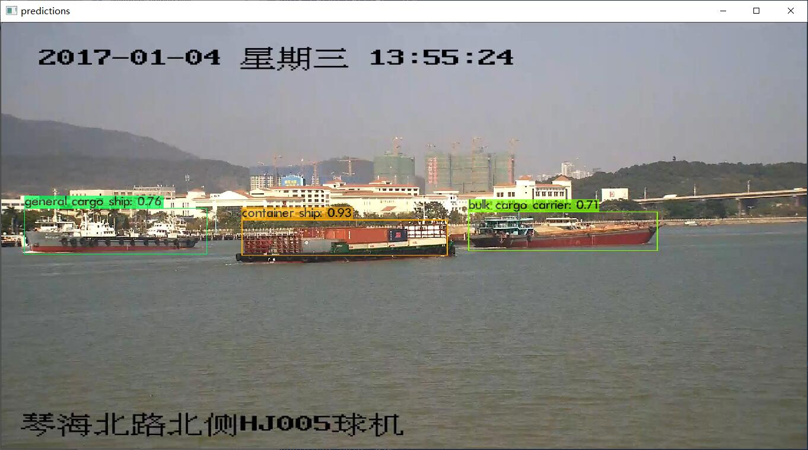
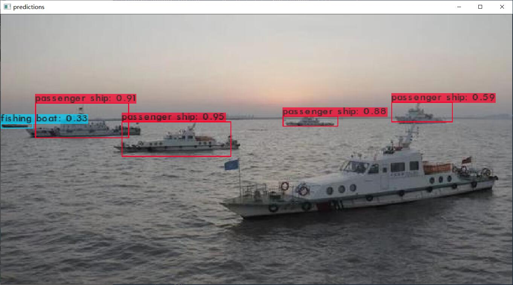
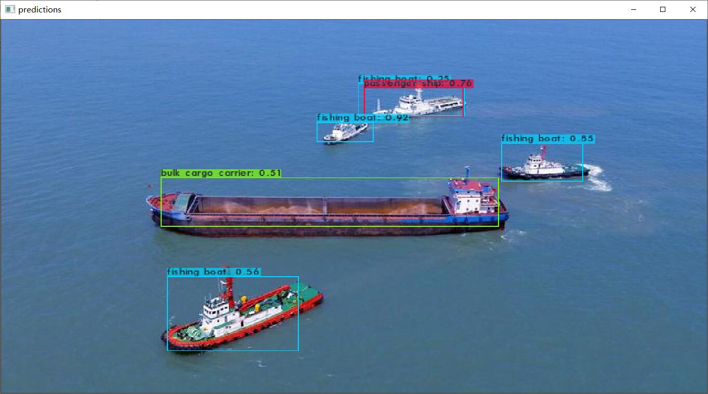
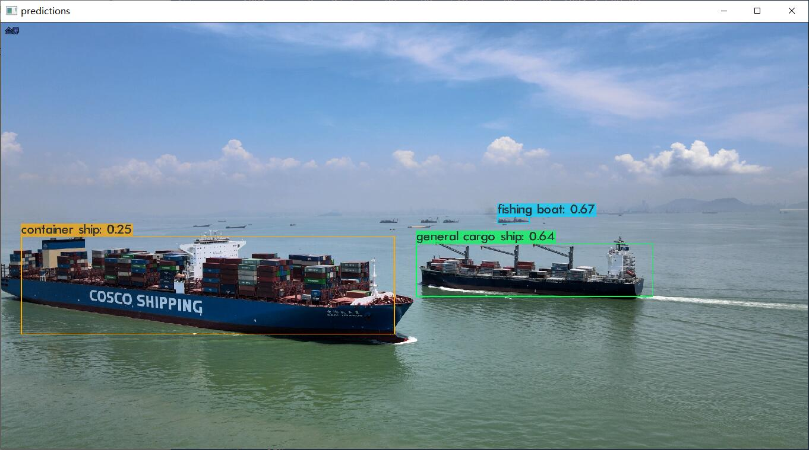

<!DOCTYPE html>
<html>
<head><meta name="generator" content="Hexo 3.9.0">
  <!-- hexo-inject:begin --><!-- hexo-inject:end --><meta charset="utf-8">
  <meta http-equiv="X-UA-Compatible" content="IE=edge">
  
  <title>船舶目标检测:使用Darknet训练yolo模型的过程记录 | uint128&#39;s Blog</title>
  <meta name="description" content="uint128&#39;s blog">
  <meta name="keywords" content="uint128,uint128&#39;s blog,uint128.com">
  <meta name="HandheldFriendly" content="True">
  <meta name="apple-mobile-web-app-capable" content="yes">
  <link rel="shortcut icon" href="/">
  <link rel="alternate" href="/atom.xml" title="uint128's Blog">
  <meta name="viewport" content="width=device-width, initial-scale=1, maximum-scale=1">
  <meta name="description" content="船舶目标检测:使用Darknet训练yolo模型的过程记录">
<meta name="keywords" content="目标检测,yolo,船舶">
<meta property="og:type" content="article">
<meta property="og:title" content="船舶目标检测:使用Darknet训练yolo模型的过程记录">
<meta property="og:url" content="https://uint128.com/2021/02/13/船舶目标检测-使用Darknet训练yolo模型的过程记录/index.html">
<meta property="og:site_name" content="uint128&#39;s Blog">
<meta property="og:description" content="船舶目标检测:使用Darknet训练yolo模型的过程记录">
<meta property="og:locale" content="zh-cn">
<meta property="og:image" content="https://uint128.com/2021/02/13/船舶目标检测-使用Darknet训练yolo模型的过程记录/000860.jpg">
<meta property="og:image" content="https://uint128.com/2021/02/13/船舶目标检测-使用Darknet训练yolo模型的过程记录/001985.jpg">
<meta property="og:image" content="https://uint128.com/2021/02/13/船舶目标检测-使用Darknet训练yolo模型的过程记录/001996.jpg">
<meta property="og:image" content="https://uint128.com/2021/02/13/船舶目标检测-使用Darknet训练yolo模型的过程记录/train_chart.png">
<meta property="og:image" content="https://uint128.com/2021/02/13/船舶目标检测-使用Darknet训练yolo模型的过程记录/p4.jpg">
<meta property="og:image" content="https://uint128.com/2021/02/13/船舶目标检测-使用Darknet训练yolo模型的过程记录/p5.jpg">
<meta property="og:image" content="https://uint128.com/2021/02/13/船舶目标检测-使用Darknet训练yolo模型的过程记录/p1.jpg">
<meta property="og:image" content="https://uint128.com/2021/02/13/船舶目标检测-使用Darknet训练yolo模型的过程记录/p2.jpg">
<meta property="og:image" content="https://uint128.com/2021/02/13/船舶目标检测-使用Darknet训练yolo模型的过程记录/p3.jpg">
<meta property="og:updated_time" content="2021-02-13T16:18:42.087Z">
<meta name="twitter:card" content="summary">
<meta name="twitter:title" content="船舶目标检测:使用Darknet训练yolo模型的过程记录">
<meta name="twitter:description" content="船舶目标检测:使用Darknet训练yolo模型的过程记录">
<meta name="twitter:image" content="https://uint128.com/2021/02/13/船舶目标检测-使用Darknet训练yolo模型的过程记录/000860.jpg">
    
  <link href="https://fonts.googleapis.com/css?family=Inconsolata|Titillium+Web" rel="stylesheet">
  <link href="https://fonts.googleapis.com/css?family=Roboto+Mono" rel="stylesheet">
  <link href="//cdnjs.cloudflare.com/ajax/libs/node-waves/0.7.5/waves.min.css" rel="stylesheet">
  <link rel="stylesheet" href="/style.css">
  <script>
    function setLoadingBarProgress(num) {
      document.getElementById('loading-bar').style.width=num+"%";
    }
  </script>
  <script src="/js/md5.js"></script>
<link rel="alternate" href="/atom.xml" title="uint128's Blog" type="application/atom+xml"><!-- hexo-inject:begin --><!-- hexo-inject:end -->
</head>
</html>
<body>
  <!-- hexo-inject:begin --><!-- hexo-inject:end --><div id="loading-bar-wrapper">
  <div id="loading-bar"></div>
</div>


  <script>setLoadingBarProgress(20)</script> 
  <header class="l_header">
	<div class='wrapper'>
		<div class="nav-main container container--flex">
			<a class="logo flat-box" href='/' >
				uint128's Blog
			</a>
			<div class='menu'>
				<ul class='h-list'>
					
						<li>
							<a class='flat-box nav-home' href='/'>
								Home
							</a>
						</li>
					
						<li>
							<a class='flat-box nav-archives' href='/archives'>
								Archives
							</a>
						</li>
					
						<li>
							<a class='flat-box nav-about' href='/about'>
								About
							</a>
						</li>
					
				</ul>
				<div class='underline'></div>
			</div>
			
				<div class="m_search">
					<form name="searchform" class="form u-search-form">
						<input type="text" class="input u-search-input" placeholder="Search" />
						<span class="icon icon-search"></span>
					</form>
				</div>
			
			<ul class='switcher h-list'>
				
					<li class='s-search'><a href='javascript:void(0)'><span class="icon icon-search flat-box"></span></a></li>
				
				<li class='s-menu'><a href='javascript:void(0)'><span class="icon icon-menu flat-box"></span></a></li>
			</ul>
		</div>
		
		<div class='nav-sub container container--flex'>
			<a class="logo" class="flat-box" href='javascript:void(0)'>
				Word of Forks
			</a>

			<ul class='switcher h-list'>
				<li class='s-comment'><a href='javascript:void(0)'><span class="icon icon-chat_bubble_outline flat-box"></span></a></li>
				<li class='s-top'><a href='javascript:void(0)'><span class="icon icon-arrow_upward flat-box"></span></a></li>
				<li class='s-toc'><a href='javascript:void(0)'><span class="icon icon-format_list_numbered flat-box"></span></a></li>
			</ul>
		</div>
	</div>
</header>
<aside class="menu-phone">
	<nav>
		
			<a href="/" class="nav-home nav">
				Home
			</a>
		
			<a href="/archives" class="nav-archives nav">
				Archives
			</a>
		
			<a href="/about" class="nav-about nav">
				About
			</a>
		
	</nav>
</aside>

    <script>setLoadingBarProgress(40);</script>
  <div class="l_body">
    <div class='container clearfix'>
      <div class='l_main'>
        <article id="post-船舶目标检测-使用Darknet训练yolo模型的过程记录"
  class="post white-box article-type-post"
  itemscope itemprop="blogPost">
	<section class='meta'>
	<h2 class="title">
  	<a href="/2021/02/13/船舶目标检测-使用Darknet训练yolo模型的过程记录/">
    	船舶目标检测:使用Darknet训练yolo模型的过程记录
    </a>
  </h2>
	<time>
	  2月 13, 2021
	</time>
	
	</section>
	
		<section class="toc-wrapper"><ol class="toc"><li class="toc-item toc-level-2"><a class="toc-link" href="#编译darknet"><span class="toc-number">1.</span> <span class="toc-text">编译darknet</span></a></li><li class="toc-item toc-level-2"><a class="toc-link" href="#尝试训练自己的模型"><span class="toc-number">2.</span> <span class="toc-text">尝试训练自己的模型</span></a><ol class="toc-child"><li class="toc-item toc-level-3"><a class="toc-link" href="#训练需要做的准备"><span class="toc-number">2.1.</span> <span class="toc-text">训练需要做的准备</span></a></li><li class="toc-item toc-level-3"><a class="toc-link" href="#训练的数据集"><span class="toc-number">2.2.</span> <span class="toc-text">训练的数据集</span></a></li><li class="toc-item toc-level-3"><a class="toc-link" href="#标注的格式转换"><span class="toc-number">2.3.</span> <span class="toc-text">标注的格式转换</span></a></li><li class="toc-item toc-level-3"><a class="toc-link" href="#训练模型"><span class="toc-number">2.4.</span> <span class="toc-text">训练模型</span></a></li><li class="toc-item toc-level-3"><a class="toc-link" href="#预测结果展示"><span class="toc-number">2.5.</span> <span class="toc-text">预测结果展示</span></a></li></ol></li><li class="toc-item toc-level-2"><a class="toc-link" href="#总结"><span class="toc-number">3.</span> <span class="toc-text">总结</span></a></li><li class="toc-item toc-level-2"><a class="toc-link" href="#参考文献"><span class="toc-number">4.</span> <span class="toc-text">参考文献</span></a></li></ol></section>
	
	<section class="article typo">
  	<div class="article-entry" itemprop="articleBody">
    	<p>船舶目标检测:使用Darknet训练yolo模型的过程记录<br><a id="more"></a></p>
<h2 id="编译darknet"><a href="#编译darknet" class="headerlink" title="编译darknet"></a>编译darknet</h2><p>其实早就了解过yolo，但是一直没时间（也可以说没动力，没分配时间）去试一下。放假了突然就想试一下目标检测。</p>
<p>谷歌查到了<a href="https://pjreddie.com/darknet/yolo/" target="_blank" rel="noopener">yolo作者的网站</a>，讲的很详细，跟着做就完事了，非常简单。</p>
<p>只可惜我第一步就卡住了。</p>
<p>根据网站的描述，第一步是下载 darknet 的源码并执行 <code>make</code> 编译。但我用的是Windows系统，作者给的 <a href="https://github.com/pjreddie/darknet" target="_blank" rel="noopener">darknet repo</a> 似乎没提供 Windows 上编译的过程。</p>
<p>于是我又去查Windows下如何编译darknet，最后找到了 <a href="https://github.com/AlexeyAB/darknet" target="_blank" rel="noopener">AlexeyAB/darknet</a>，提供了在Windows和Linux的编译方法。</p>
<p>不过 AlexeyAB/darknet 的文档让我有一点点疑惑。它提供了使用 vcpkg 编译 darknet 的方法，但是它的步骤似乎多了很多多余的步骤：</p>
<figure class="highlight powershell"><table><tr><td class="gutter"><pre><span class="line">1</span><br><span class="line">2</span><br><span class="line">3</span><br><span class="line">4</span><br><span class="line">5</span><br><span class="line">6</span><br><span class="line">7</span><br><span class="line">8</span><br><span class="line">9</span><br></pre></td><td class="code"><pre><span class="line">PS Code\&gt;              git clone https://github.com/microsoft/vcpkg</span><br><span class="line">PS Code\&gt;              cd vcpkg</span><br><span class="line">PS Code\vcpkg&gt;         <span class="variable">$env:VCPKG_ROOT</span>=<span class="variable">$PWD</span></span><br><span class="line">PS Code\vcpkg&gt;         .\bootstrap-vcpkg.bat</span><br><span class="line">PS Code\vcpkg&gt;         .\vcpkg install darknet[full]:x64-windows <span class="comment">#replace with darknet[opencv-base,cuda,cudnn]:x64-windows for a quicker install of dependencies</span></span><br><span class="line">PS Code\vcpkg&gt;         cd ..</span><br><span class="line">PS Code\&gt;              git clone https://github.com/AlexeyAB/darknet</span><br><span class="line">PS Code\&gt;              cd darknet</span><br><span class="line">PS Code\darknet&gt;       powershell -ExecutionPolicy Bypass -File .\build.ps1</span><br></pre></td></tr></table></figure>
<p>实际上，在 <code>.\vcpkg install darknet[full]:x64-windows</code> 这一步就把 darknet 编译出来了。编译出来的 darknet.exe 在 <code>vcpkg\installed\x64-windows\tools\darknet</code> 里。</p>
<p>我花了很多时间在后面的那些指令上，因为最后一步的 powershell 脚本我执行的时候总是提示找不到 CUDA 编译器。</p>
<p>把编译的 powershell 脚本和 CMakeLists.txt 看了又看，改了又改，都没解决问题。</p>
<p>所以我只好倒回到 vcpkg 的步骤，检查 installed 文件夹，查看是不是哪些依赖没装好。</p>
<p>就这么巧合地发现 darknet.exe 躺在 tools 文件夹里。</p>
<p>我用的指令是作者推荐的 <code>vcpkg install darknet[opencv-base,cuda,cudnn]:x64-windows</code>。但是编译出来的 darknet 居然提示没有 opencv，不能直接显示预测图片，只能把预测结果保存到硬盘再查看。</p>
<p>vcpkg 编译的结果不满意，我只能再编译一次。</p>
<p>在找错的时候，我分析出这个 powershell 脚本就做了两件事：</p>
<ol>
<li>通过 VCPKG_ROOT 环境变量找到 vcpkg.exe，然后使用 vcpkg 编译依赖，并且把编译结果放到 darknet 源码的根目录（而不是 vcpkg 的 installed 文件夹）。</li>
<li>执行 cmake，其中 CMakeLists.txt 就在 darknet 源码的根目录。</li>
</ol>
<p>所以我决定绕过这个 powershell 脚本，直接用 CMake-GUI 来编译。</p>
<p>这个过程的步骤很多，但都是 CMake 的一些基本操作。</p>
<p>很顺利地成功了，没有什么找不到 CUDA 编译器的错误。</p>
<blockquote>
<p>题外话：安装完 CUDA 后，我的 Visual Studio 2019 变得非常卡！一直在等待什么扩展的加载！看了下扩展菜单，多了个 Nsight 的菜单。我想把这个扩展禁用了，但是 VS 的扩展管理器里却找不到这个扩展。<br>查了 VS 的社区论坛，似乎是 Nsight 的一个 BUG，但是没人提供解决方法，只是说和 VS 没关系。在 StackOverflow 里也遇到了同样的问题，一模一样，问题已经存在一个月了，但是没有任何答案。<br>然后我就想到控制面板把整个 Nsight 给删掉试试看，发现了一项 Nsight Integration 很可疑。试着卸载它，发现问题就这样解决了。贡献了一个 <a href="https://stackoverflow.com/a/66168896/10990271" target="_blank" rel="noopener">StackOverflow 回答</a>。</p>
</blockquote>
<h2 id="尝试训练自己的模型"><a href="#尝试训练自己的模型" class="headerlink" title="尝试训练自己的模型"></a>尝试训练自己的模型</h2><p>体验模型还是不够过瘾的，我更想试着训练出自己的模型。</p>
<p>我体验的模型是 PASCAL VOC 数据集的模型，都是人啊猫狗啊之类的常见对象。因为已经有了，所以这些对象我都没兴趣去训练了。</p>
<p>我最终决定去检测船舶，一个是这和我的专业有点关系，另一个是我找到了现成的数据集，不用自己标注了（重点）。</p>
<h3 id="训练需要做的准备"><a href="#训练需要做的准备" class="headerlink" title="训练需要做的准备"></a>训练需要做的准备</h3><p>AlexeyAB/darknet 的 README 文件说的非常详细，一步一步地指导应该修改什么文件。</p>
<p>这里我做个简单的总结：</p>
<ol>
<li>修改 yolov4-custom.cfg 文件, 让它符合你的需要（这一步会设置<strong>目标检测分类的数量</strong>和<strong>神经网络的大小</strong>等参数）</li>
<li>准备好训练用的数据集，包括<strong>图片</strong>和<strong>标注文件</strong>，图片和标注文件都放在同一个文件夹里。标注文件的文件名和图片的文件名一样，只是后缀是<strong>txt</strong>。标注文件用一个矩形描述对象所在的位置。</li>
<li>准备 train.txt 里面是图片的路径，一行一个。(相对于 darknet.exe 的相对路径)</li>
<li>准备 valid.txt 里面是图片的路径，同 train.txt，这里的图片用于验证。(不是必须)</li>
<li>准备 obj.names 文件，内容是分类的名字，一行一个。</li>
<li>准备 obj.data 文件，内容包括<strong>分类的数量</strong>、<strong>train.txt和valid.txt的路径</strong>、<strong>obj.names的路径</strong>和<strong>模型备份的目录路径</strong>。</li>
</ol>
<h3 id="训练的数据集"><a href="#训练的数据集" class="headerlink" title="训练的数据集"></a>训练的数据集</h3><p>训练用的数据集来自于论文 “Seaships: A large-scale precisely annotated dataset for ship detection” [1], 下载地址：<a href="http://www.lmars.whu.edu.cn/prof_web/shaozhenfeng/datasets/SeaShips(7000" target="_blank" rel="noopener">SeqShips(7000)</a>.zip)。</p>
<p>包含六个分类：orecarrier, bulk cargo carrier, general cargo ship, container ship, fishing boat, and passenger ship。</p>
<p>数据集里的图片长这样：</p>
<p><br><br></p>
<p>都是来自航道监控的一些图片，很模糊。而且论文里说数据集有三万多张图，但是我只从<a href="http://www.lmars.whu.edu.cn/prof_web/shaozhenfeng/E-publication.html" target="_blank" rel="noopener">作者的网站</a>里下载到了 7000 张图片的数据集。</p>
<h3 id="标注的格式转换"><a href="#标注的格式转换" class="headerlink" title="标注的格式转换"></a>标注的格式转换</h3><p>数据集用的标注格式是 PASCAL VOL 的格式，就是一个图片对应一个XML文件。XML文件包含图片的大小、目标的分类和目标所在的矩形区域(左上角的点(Xmin,Ymin)和右下角的点(Xmax,Ymax)，即xmin,ymin,xmax,ymax共四个值)。</p>
<p>但是使用 darknet 进行训练，就要用 darknet 的标注格式。darknet的标注格式是一张图片对应一个txt文件，txt文件一行就是一个检测目标：</p>
<figure class="highlight plain"><table><tr><td class="gutter"><pre><span class="line">1</span><br></pre></td><td class="code"><pre><span class="line">&lt;object-class&gt; &lt;x&gt; &lt;y&gt; &lt;width&gt; &lt;height&gt;</span><br></pre></td></tr></table></figure>
<p>所以要进行格式上的转换。</p>
<p>实际上，yolo作者的网站也是用darknet训练 PASCAL VOL 数据集，也提到了这个转换。而且yolo作者提供了这个转换的python程序。</p>
<p>稍微修改一下这个python程序，就能进行转换了。</p>
<h3 id="训练模型"><a href="#训练模型" class="headerlink" title="训练模型"></a>训练模型</h3><p>按照 AlexeyAB/darknet 的文档，大概要训练 9000 iteration 会有比较好的结果。但实际上我训练了 300 iteration 就开始测试了。</p>
<p>300 迭代的结果就是，什么结果都没有，没有检测的框框。太心急了！</p>
<p>500 迭代我又去测试，这次终于能检测到一些船舶了。但是个别数据集的图片还是没有结果。</p>
<p></p>
<p>评估模型完好程度的指标除了迭代次数，还有就是 darknet 的输出。</p>
<p>输出的内容里有一个指标是 IoU，它的含义是 <em>检测的框框</em>和<em>标注的框框</em>面积的<strong>交集</strong> 与 <em>检测的框框</em>和<em>标注的框框</em>面积的<strong>并集</strong> 的<strong>比值</strong>。</p>
<p>指标 IoU 的值介于 0~1，它越高，说明检测的结果与标注的结果越接近，一般来说 0.7 以上就是良好。</p>
<p>结合 AlexeyAB/darknet 文档中的图片能更好地理解 IoU，我就不浪费读者的时间了。</p>
<p>我的机器是一台办公笔记本，显卡是 MX150，训练速度非常慢，500 迭代大概花了三四个小时。</p>
<p>后来我又换 GTX 1660s 的台式机来训练，同样是三四个小时，能够达到 1300 迭代。</p>
<blockquote>
<p>我的笔记本感觉要牺牲了，训练期间GPU保持在93℃。而且因为是第一次训练，经验不足，重来了几次，所以实际训练时间大概有五六个小时，这期间笔记本一直处于高温的状态，没让它休息。<br>感觉电池鼓包更严重了，触控板都突出来了。</p>
</blockquote>
<h3 id="预测结果展示"><a href="#预测结果展示" class="headerlink" title="预测结果展示"></a>预测结果展示</h3><p>下面两张是训练数据集的预测结果，效果还比较理想。</p>
<p><br></p>
<p>下面这三张图片都是网上另外找的，不在训练数据集里：</p>
<p><br><br></p>
<p>船舶的位置确实是准确找出来了，但是分类几乎都是错的。这可能是因为迭代次数太少了，或者可能是训练数据集的图片太模糊了，船舶的特征不够明显。又或者，训练用的船都是内河船，测试用的船都是海船，外形差别有点大。</p>
<p>另外，这个模型对于竖着的船，很容易就检测不出来了。这可能是因为训练的数据集里的船都是横着的。</p>
<p>还有就是对于占图篇幅很大的船（离镜头很近），即使船舶是完整的，模型也容易识别不出来。这可能是因为数据集里的船都是离镜头很远的船，在图片里很小，训练出来的模型就不够自信了？</p>
<h2 id="总结"><a href="#总结" class="headerlink" title="总结"></a>总结</h2><p>挺好玩的，训练模型很吃配置，耗时间。</p>
<p>整个训练过程实际上最关键的一步是找到标注好的数据集，我自己是没有能力标注出那么多的图片的，很好地体会了 “人工智能时代，信息数据就是资源” 这句话。</p>
<h2 id="参考文献"><a href="#参考文献" class="headerlink" title="参考文献"></a>参考文献</h2><blockquote>
<p>[1] Shao, Zhenfeng, et al. “Seaships: A large-scale precisely annotated dataset for ship detection.” IEEE transactions on multimedia 20.10 (2018): 2593-2604.</p>
</blockquote>

  	</div>
	  
	  <div class="article-tags tags">
      
        <a href="/tags/目标检测/">目标检测</a>
      
        <a href="/tags/yolo/">yolo</a>
      
        <a href="/tags/船舶/">船舶</a>
      
	  </div>
    
		
	
		<div class="art-item-footer">
				
				
					<span class="art-item-right">next：<a href="/2021/02/04/今日校园APP逆向分析/" rel="next"  title="今日校园APP逆向分析">
						今日校园APP逆向分析
					</a><i class="icon icon-chevron-thin-right"></i></span>
				
		</div>
	
	</section>


	

</article>


	<div id="gitalk-container"></div>
	<link rel="stylesheet" href="https://unpkg.com/gitalk/dist/gitalk.css">

<script src="https://unpkg.com/gitalk/dist/gitalk.min.js"></script>

 <script type="text/javascript">
      var gitalk = new Gitalk({
        clientID: '53e3c578fcb7b7b1a4da',
        clientSecret: '74433ee77d6e13fd635b82add519e143ac791726',
        repo: 'cyanray.github.io',
        owner: 'cyanray',
        admin: ['cyanray'],
        id: CryptoJS.MD5(location.pathname).toString(),
        labels: ['Gitalk'],
        perPage: 15,
        pagerDirection: 'last',
        createIssueManually: true,
        distractionFreeMode: false
      })

      gitalk.render('gitalk-container')
 </script>


<script>
	window.subData = {
		title: '船舶目标检测:使用Darknet训练yolo模型的过程记录',
		tools: true
	}
</script>

      </div>
      <aside class='l_side'>
        
  <section class='m_widget about'>
    
            <div class='header'>
                uint128.com
            </div>
            <div class='content'>
                <div class='desc'>uint128, unsigned int.<br>Uint128 Is Not a Type with 128 bits.</div>
            </div>
</section>

  <section class='m_widget links'>
<div class='header'>Links</div>
<div class='content'>
    <ul class="entry">
    
        <li><a class="flat-box" target="_blank" href="https://github.com/cyanray">
            <div class='name'>My Github</div>
        </a></li>
    
        <li><a class="flat-box" target="_blank" href="https://yuanxingxing-yxx.github.io/">
            <div class='name'>星星的博客</div>
        </a></li>
    
        <li><a class="flat-box" target="_blank" href="http://www.h13studio.com/">
            <div class='name'>H13-Studio</div>
        </a></li>
    
        <li><a class="flat-box" target="_blank" href="http://quosimodo.cn/">
            <div class='name'>卡西莫多の礼物</div>
        </a></li>
    
        <li><a class="flat-box" target="_blank" href="http://www.dora-kong.com/">
            <div class='name'>哆啦控 - dora-kong.com</div>
        </a></li>
    
    </ul>
</div>
</section>

      </aside>
      <script>setLoadingBarProgress(60);</script>
    </div>
  </div>
  <footer id="footer" class="clearfix">

	<div class="social-wrapper">
  	
      
        <a href="https://github.com/cyanray" class="social github"
          target="_blank" rel="external">
          <span class="icon icon-github"></span>
        </a>
      
    
  </div>
  
  <div>Theme <a href='https://github.com/stkevintan/hexo-theme-material-flow' class="codename">MaterialFlow</a> designed by <a href="http://keyin.me/" target="_blank">Kevin Tan</a>.</div>
  
</footer>


  <script>setLoadingBarProgress(80);</script>
  

<script src="//apps.bdimg.com/libs/jquery/2.1.4/jquery.min.js"></script>
<script src='//cdnjs.cloudflare.com/ajax/libs/node-waves/0.7.5/waves.min.js'></script>
<script src="//cdnjs.cloudflare.com/ajax/libs/scrollReveal.js/3.3.2/scrollreveal.min.js"></script>
<script src="/js/jquery.fitvids.js"></script>
<script>
	var GOOGLE_CUSTOM_SEARCH_API_KEY = "";
	var GOOGLE_CUSTOM_SEARCH_ENGINE_ID = "";
	var ALGOLIA_API_KEY = "";
	var ALGOLIA_APP_ID = "";
	var ALGOLIA_INDEX_NAME = "";
  var AZURE_SERVICE_NAME = "";
  var AZURE_INDEX_NAME = "";
  var AZURE_QUERY_KEY = "";
  var BAIDU_API_ID = "";
  var SEARCH_SERVICE = "hexo";
  var ROOT = "/"||"/";
  if(!ROOT.endsWith('/'))ROOT += '/';
</script>
<script src="/js/search.js"></script>
<script src="/js/app.js"></script>


  
    <script type="text/x-mathjax-config">
      MathJax.Hub.Config({
          tex2jax: {
            inlineMath: [ ['$','$'], ["\\(","\\)"] ],
            processEscapes: true
          }
        });
      </script>
    
    <script type="text/x-mathjax-config">
      MathJax.Hub.Config({
            tex2jax: {
              skipTags: ['script', 'noscript', 'style', 'textarea', 'pre', 'code']
            }
          });
      </script>
    
    <script type="text/x-mathjax-config">
      MathJax.Hub.Queue(function() {
              var all = MathJax.Hub.getAllJax(), i;
              for(i=0; i < all.length; i += 1) {
                  all[i].SourceElement().parentNode.className += ' has-jax';
              }
          });
      </script>
    
    <script type="text/javascript" src="https://cdnjs.cloudflare.com/ajax/libs/mathjax/2.7.4/MathJax.js?config=TeX-MML-AM_CHTML">
    </script>
    
  <script>setLoadingBarProgress(100);</script><!-- hexo-inject:begin --><!-- Begin: Injected MathJax -->
<script type="text/x-mathjax-config">
  MathJax.Hub.Config("");
</script>

<script type="text/x-mathjax-config">
  MathJax.Hub.Queue(function() {
    var all = MathJax.Hub.getAllJax(), i;
    for(i=0; i < all.length; i += 1) {
      all[i].SourceElement().parentNode.className += ' has-jax';
    }
  });
</script>

<script type="text/javascript" src="https://cdnjs.cloudflare.com/ajax/libs/mathjax/2.7.4/MathJax.js?config=TeX-MML-AM_CHTML">
</script>
<!-- End: Injected MathJax -->
<!-- hexo-inject:end -->
</body>
</html>
